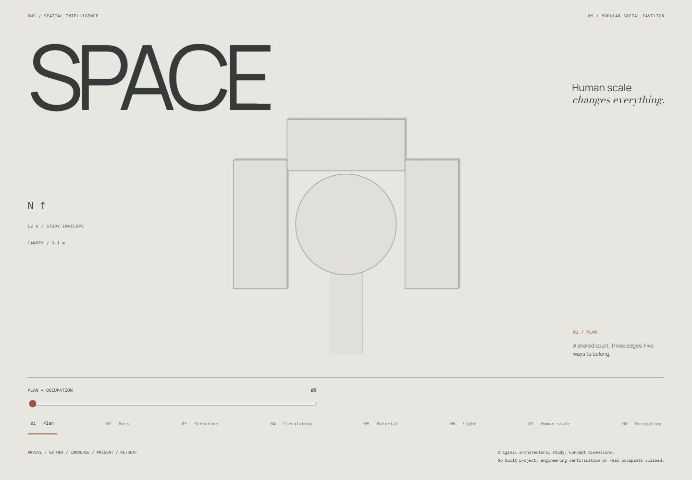
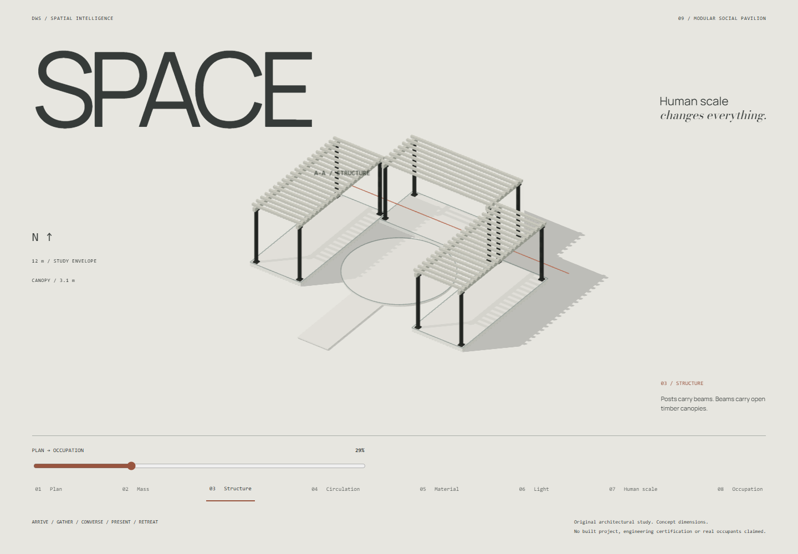
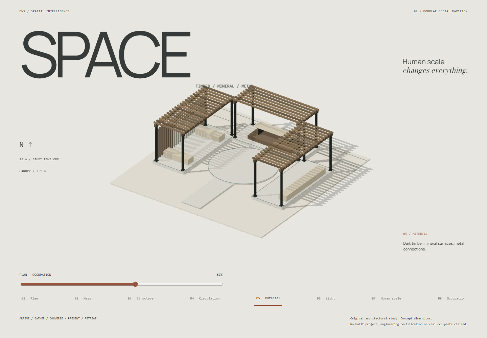
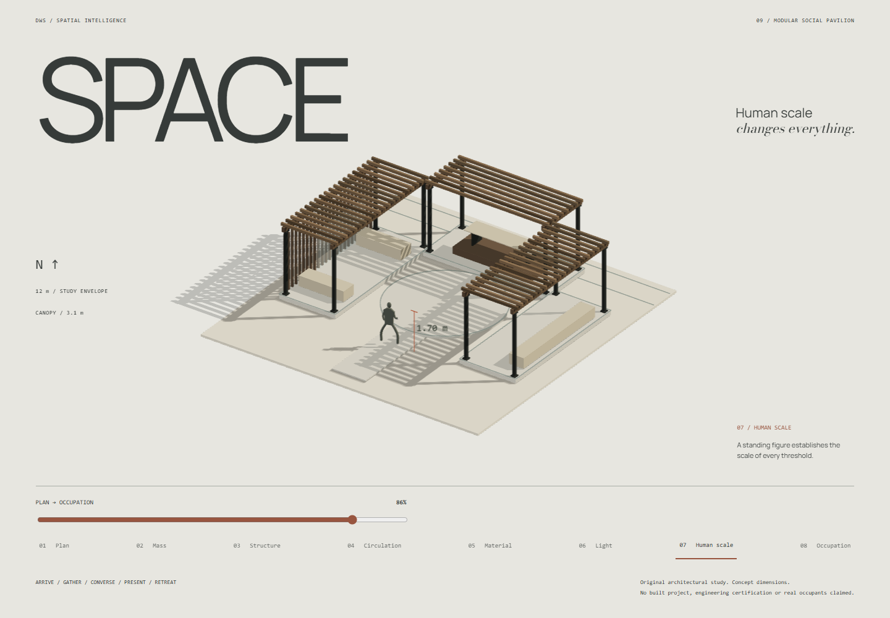
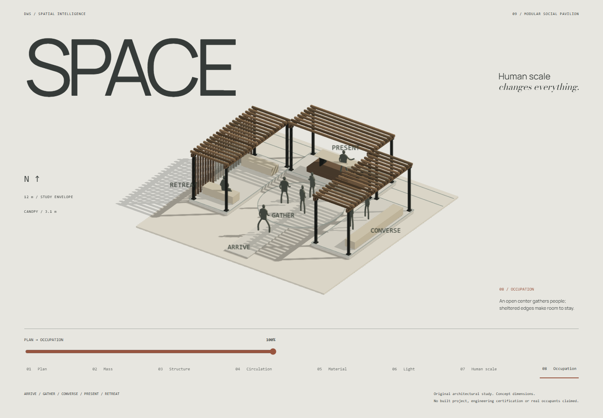
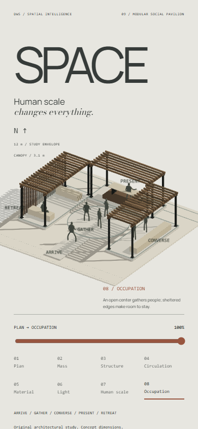

DWS — Space Final Founder GateDWS / PHASE III / FINAL FOUNDER GATESPACE
The approved pavilion, represented with material differentiation, filtered light, site definition and purposeful human occupation. Seven new captures only. No deployment.
Open the continuous study →1440 / PLAN
1440 / STRUCTURE
1440 / MATERIAL
1440 / LIGHT1440 / HUMAN SCALE
1440 / OCCUPATION
390 / OCCUPATION